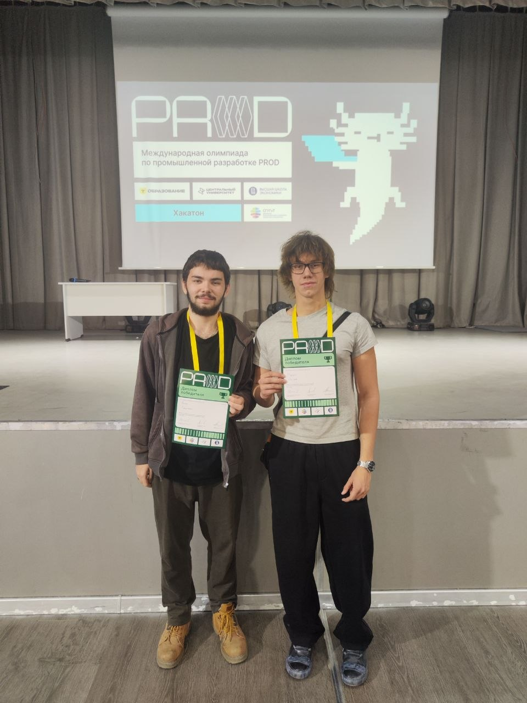

Автор проекта
Горшков Матвей.
Создаю игры и инструменты, в которых сложные идеи становятся понятными, живыми и немного красивее, чем их представляешь в начале.
Идеи тоже вступают в реакцию.

- Геймдизайнер
- Придумываю механики, баланс и тот самый момент, когда игроку хочется ещё.
- C# developer
- Собираю игровые системы, инструменты и прототипы на C#.
- Мой подход
- Сначала любопытство, потом прототип, затем полировка до ощущения «работает».